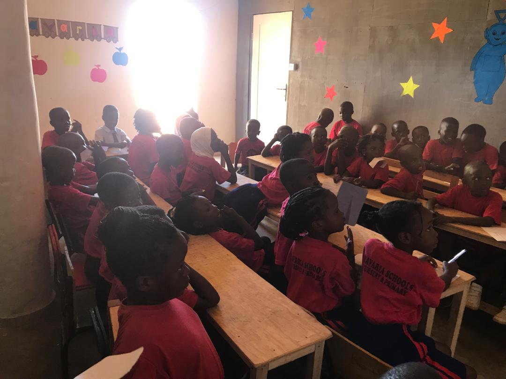

Möbel
Die Klassenmöbel sind begrenzt und müssen schrittweise ergänzt werden.
Aktueller Bedarf
Diese Seite beschreibt den aktuellen Bedarf in klarer Reihenfolge. Vorrang hat der Ausbau von Klassenräumen, um Platzengpässe zu verringern und den Unterricht verlässlich zu verbessern.
Mehrere Klassenräume sind überfüllt, und ein Teil des Unterrichts findet in provisorischen Bereichen statt. Räume von etwa 3,9 m x 3,9 m werden teils mit mehr als 24 Kindern genutzt. Das begrenzt Lernqualität und Klassenführung deutlich.
Erste Priorität ist der Bau zusätzlicher, dauerhafter Klassenräume. Das ist der direkteste Schritt, um Überbelegung zu reduzieren und tragfähige Lernflächen zu schaffen.
Jeder zusätzliche dauerhafte Klassenraum verbessert die täglichen Lernbedingungen für Kinder und Lehrkräfte unmittelbar.

Die Klassenmöbel sind begrenzt und müssen schrittweise ergänzt werden.
Computerressourcen sind weiterhin knapp und sollen geordnet ausgebaut werden.
Stipendien bleiben wesentlich für Kinder, deren Familien die Kosten nicht tragen können.
Die Schule steht zudem vor betrieblichen Herausforderungen, darunter ein alter und unzuverlässiger Schulbus.
Ein Phasenansatz stellt sicher, dass Mittel zuerst in den dringendsten Engpass fließen, während weitere notwendige Bereiche parallel berücksichtigt werden.
Diese Reihenfolge steht für verantwortlichen Mitteleinsatz: zuerst Klassenraumkapazität sichern, danach sekundäre Bedarfe schrittweise ausbauen.
Für Angaben zur Vereinsführung und rechtliche Informationen besuchen Sie bitte die Transparenzseite oder kontaktieren Sie uns direkt.